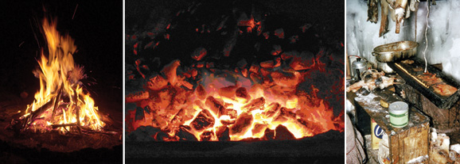
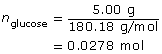
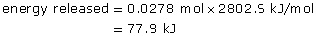
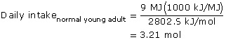
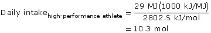

Module 1—Thinking Energy
 Explore
Explore
Ultimate Energy Sources
 Self-Check
Self-Check
Combustion processes are used by many cultures to obtain energy. Refer to the following pictures to answer the Self-Check questions below.

left: © Péter Gudella /shutterstock right: R. Knights/NWT Archives
SC 1. The photos above illustrate three combustion processes. Where does the energy within each fuel come from?
SC 2. Draw a diagram that traces the energy source in each of the fuels back to its origin. Save a copy of the diagrams in your course folder. You may wish to refer to these later.
SC 3. State two additional ultimate energy sources?
 Self-Check Answer
Self-Check Answer
Contact your teacher if your answers vary significantly from the answers provided here.
SC 1. All energy sources originated from biological sources (wood, coal, and animal fat), meaning that the ultimate source of energy was the sun.
SC 2. Your diagrams should look like the following (arrows indicate the direction of the flow of energy):
sun → tree → firewood
sun → plant/animal tissue → coal
sun → plant life → fish → seal oil
Remember to place a copy of these diagrams in your course folder for a
later look.
SC 3. The other ultimate energy sources include geothermal energy and gravitational energy.
 Read
Read
Read pages 480 and 481 in the textbook, Nelson Chemistry Alberta 20–30.
Compare your answers to SC 1 and SC 2 with what you read in the
textbook. Did you correctly identify the original source of energy for
the three fuels? Modify your answer if you need to, and then place an
updated copy in your course folder.
Read
chemical potential energy: the form of energy present within the chemical bonds of a substance
What purpose does food have? Although taste is important, food is all about energy. How much energy do you require to perform your daily activities? Why are you hungrier after a hike in the mountains than when you are sitting and watching television?
To perform your daily activities, your body uses chemical potential energy from the food you consume. In previous science courses you learned that energy is measured in joules. The energy in food can also be measured in another unit, calories.
Read the “Personal Use of Chemical Energy” case study on page 482 of the textbook. In the case study, you will investigate how you obtain energy from your diet and how energy intake should be balanced with activity level and other energy requirements.
Self-Check
SC 4. Complete question 1 of the case study on page 482 in the textbook.
SC 5. Complete question 2 of the case study on page 482 in the textbook.
![A graphic shows the circular version of the glucose molecule. The glucose molecule has a hexagon shape. A carbon atom is located at five of the six points in the hexagon; at the sixth point is an oxygen atom. Each carbon atom in the ring has two bonds to other atoms that make up the ring, and two bonds to other atoms outside the ring. One of these bonds is to a hydrogen atom. Four of the carbon atoms in the ring have their second bond to an oxygen atom of a hydroxyl functional group. One carbon atom in the ring has its second bond to a carbon atom that is bonded to two hydrogen atoms and a hydroxyl functional group.](../../images/m1/002_compound.jpg)
SC 6. Calculate the mass of glucose that would need to be consumed to meet the daily energy requirements of a normally active young adult. Use the values shown in the case study and the diagram of the glucose molecule.
SC 7. Repeat the calculations for a high-performance athlete.
Self-Check Answer
Contact your teacher if your answers vary significantly from the answers provided here.
SC 4.
Food and fossil fuels are the two main sources of chemical energy for personal use.
SC 5.
C6H12O6(s)


SC 6.

SC 7.

Read
Can you imagine having a diet in which you ate only glucose? A healthy diet contains other foods and energy sources.
Certain foods have more chemical potential energy than other foods. If you examine the diagram of the glucose molecule, you will identify a number of chemical bonds. The chemical potential energy you obtain from food is stored in the chemical bonds that hold molecules together. Your digestive system is designed to break these chemical bonds and to absorb or convert what you eat into carbohydrates, proteins, and fats that your body can access when it needs energy.
(e.g., glucose, C6H12O6)
Some types of chemical potential energy are easier for your body to
use than others. Simple carbohydrate molecules, such
as sugars like glucose, are a quick source of energy for the body
because the molecule's bonds are easy to break. It takes the body
longer to break the bonds in complex carbohydrates, like the starch
found in pasta and whole-grain flour. Because they can provide a source
of energy for a long period of time, complex carbohydrates are better
for high-energy sports with long durations—hiking and cross-country
skiing, for example.
© 2008 Jupiterimages Corporation
Hikers and campers use information about different types of food to
make informed choices when they pack for trips. They choose foods that
pack a high-energy bang for the buck. Energy bars, which are a popular
choice for many hikers, often include a mixture of simple and complex
carbohydrate sources. These sources provide the immediate and long-term
energy to support an activity.